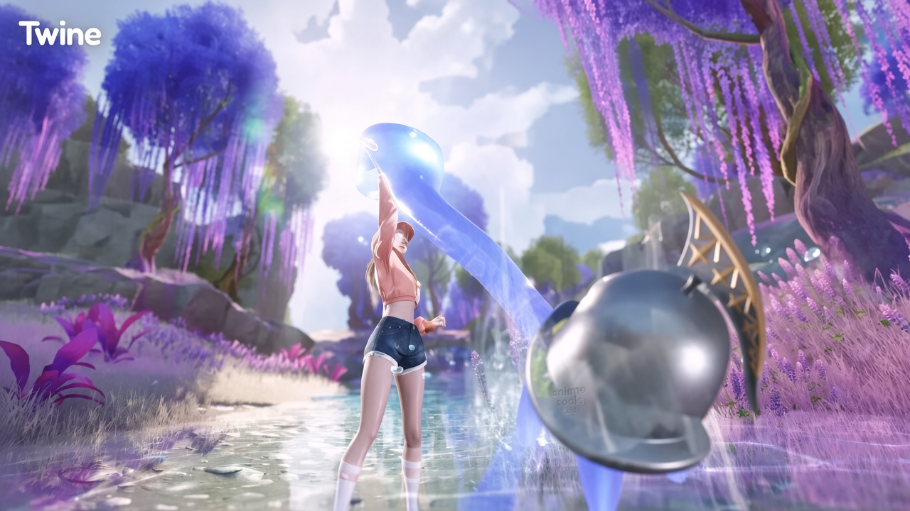

Immagina di non essere più solo dentro il tuo corpo. È questo, in fondo, il Twine (intreccio): il cuore del rapporto tra umani e Aniimo, un legame misterioso che unisce i cuori e permette di condividere i sensi. Nel gioco prende la forma di una vera fusione, riassunta dal motto Be One, Be All: il Pathfinder si sintonizza con un Aniimo e diventa tutt'uno con lui, e in Modalità Twine il suo personaggio assume la forma della creatura, si muove e usa le abilità come lei.
Nella lore è anche un modo di vedere. Un Pathfinder può osservare e percepire il mondo attraverso gli occhi del proprio Aniimo, e questo legame non è nato con il gioco: dai tempi dell'Antica Idyll si dice «fare twine» di chi riesce a unirsi a una creatura. L'Istituto Polaris ne migliora la stabilità con addestramento e dispositivi tecnologici, come l'Omni-glove del Capitolo 1, ma le ragioni profonde del Twine restano ancora da studiare. Come funzioni davvero, nessuno lo sa del tutto: si sa solo che, quando riesce, due esseri diversi smettono di essere due.
La fusione è prima di tutto il modo di attraversare Idyll. Non esiste una cavalcatura separata: ogni Aniimo ha un proprio tratto di mobilità, e con il Twine il Pathfinder vola, scava e corre, e supera ostacoli e puzzle legati all'abilità della creatura scelta. Non è legato a un solo compagno: in esplorazione può passare liberamente tra i quattro Aniimo della squadra e usare tutte le loro abilità, scegliendo di volta in volta il corpo più adatto al luogo in cui si trova. Nei Santuari, dove la squadra non può entrare, il Twine diventa l'unico strumento: ci si fonde per un tempo limitato con un Aniimo nativo del dungeon e se ne usano elettricità, ghiaccio o magnetismo.
Quando arriva lo scontro, i modi sono due. In Modalità Comando il Pathfinder resta se stesso e dà ordini ai suoi Aniimo; in Modalità Twine si fonde con una creatura e la controlla in prima persona, con i suoi movimenti, i suoi elementi e le sue abilità. Molti scontri difficili richiedono il Twine, perché è l'unico modo per schivare certi attacchi ad area. Nelle modalità a squadre, come Holo-Battle Interlink ed Egg Heist, solo il primo Aniimo del gruppo agisce davvero e gli altri possono dare soltanto un breve supporto con le abilità principali.
Il Twine non è solo una meccanica, è anche la prima prova della storia. Nelle rovine in cui si risveglia l'antico cubo, è facendo Twine con il nuovo compagno, Helion o Lunara, che riesci a respingerlo; poi i due Aniimo, esausti, tornano piccoli, e il legame resta. Da qui in avanti ogni passo del racconto è, in un modo o nell'altro, un passo fatto in due.
Resta una domanda: da dove viene l'energia che tiene vivo tutto questo? Per rispondere dobbiamo scendere sotto la superficie di Idyll, dove scorrono le Vene.